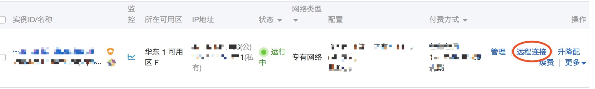
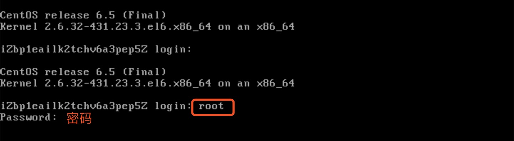
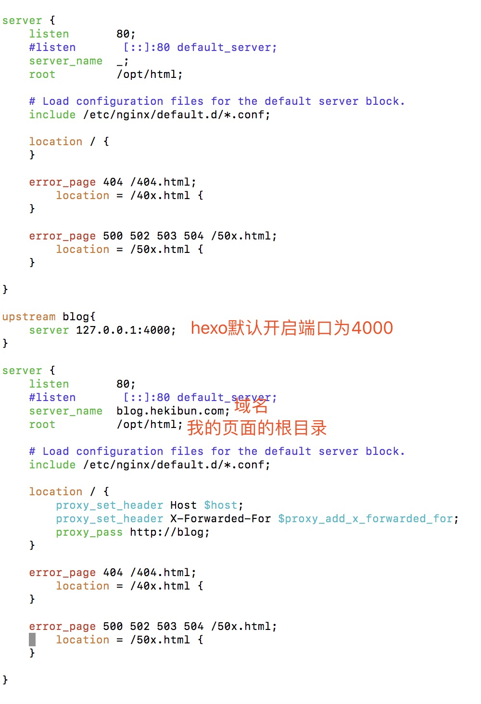
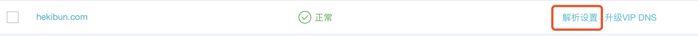
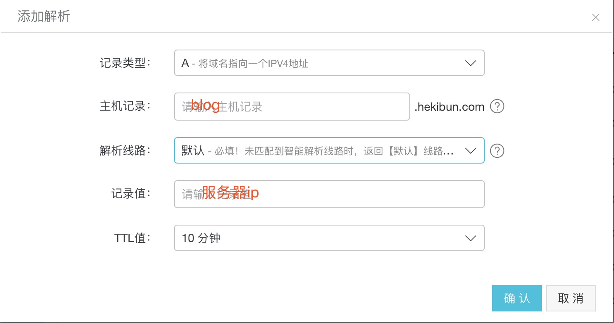

hexo 从零开始建立自己的博客
hexo是一款快速，高效，简洁的博客框架。
本文介绍如何快速在自己的服务器上搭建一个hexo博客。
选择云服务器和域名
安装Nginx服务器
域名需要备案，在备案期间，可以先配置好服务器。
nginx是一个功能非常强大的web服务器加反向代理服务器，同时又是邮件服务器等等。在项目使用中，使用最多的三个核心功能是反向代理、负载均衡和静态服务器。
连接云服务器

安装缺少的依赖包
$ yum -y install gcc gcc-c++ make libtool zlib zlib-devel openssl openssl-devel pcre pcre-devel安装及启动nginx,当需要确认时输入”y“确认
$ yum install nginx安装完成后，启动nginx服务
$ service nginx start测试nginx服务是否成功启动
$ wget http://127.0.0.1nginx的默认端口为80，若服务器未开发80端口，则需要在服务器上开放端口。
修改nginx配置文件,我的配置文件在/etc/nginx/conf.d
$ vim /etc/nginx/conf.d/default.conf输入i进入编辑模式，按esc退出编辑模式，输入:wq保存退出。

更多nginx配置请查看 [官方文档](http://nginx.org/en/docs/)
进行域名解析


安装各种环境
- 远程登录云服务器
hexo是基于node.js的，因此要想使用hexo，必须安装node环境
安装node.js
- 在管理控制台把云服务器启动
- 用putty登录服务器
将软件更新到最新的版本
$ yum -y update我们将使用最新源代码构建Node.js，要进行软件的安装，需要一组用来编译源代码的开发工具
$ yum -y groupinstall "Development Tools"现在就可以开始安装Node.js，首先需要进入/usr/src文件夹，这个文件夹通常用来存放软件源代码
$ cd /usr/src从node.js的站点中获取最新的压缩档源代码,本文以版本为(v0.10.18)为例，网址为：http://nodejs.org/download
$ wget http://nodejs.org/dist/v0.10.18/node-v0.10.18.tar.gz解压缩源文件，并且进入到压缩后的文件夹中
$ tar zxf node-v0.10.18.tar.gz $ cd node-v0.10.18执行配置脚本来进行编译预处理
$ ./configure开始编译源代码
$ make当编译完成后，我们需要使之在系统范围内可用, 编译后的二进制文件将被放置到系统路径，默认情况下，node二进制文件应该放在/user/local/bin/node文件夹下
$ make install
安装hexo，详细文档请查看hexo文档
安装客户端
$ npm install -g hexo-cli安装服务端
$ npm install hexo --save新建一个用于装在hexo的文件夹，如hexo
切换到该文件夹，执行以下命令：$ cd /opt //我的域名所在根目录 $ hexo init //初始化该文件夹 $ npm install //安装相应的依赖包此时hexo搭建博客已基本完成。可执行以下命令来查看博客的初始效果：
$ hexo clean //清空public文件夹下面的内容，该文件夹用于存放生成的网页文件。 $ hexo g //该命令用于产生相应的网页文件，在public文件夹下 $ hexo s //启动一个本地服务器，一般是http://localhost:4000，可查看生成的网页情况。执行完后，可访问blog.hekibun.com